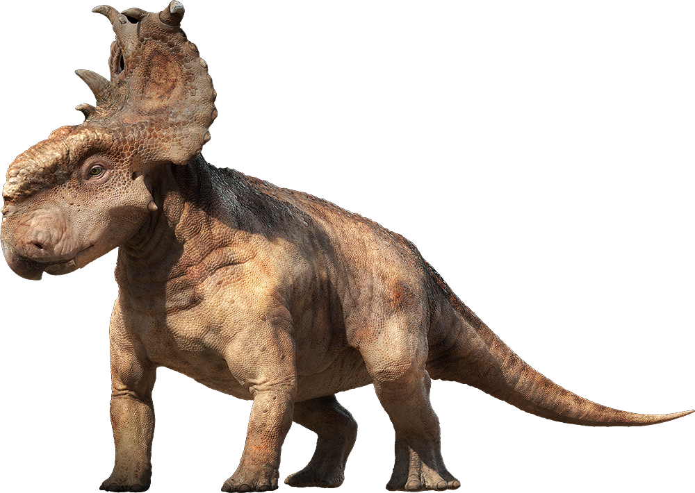

Pachyrhinosaurus is a dinosaur which lived around 70 million years ago during the late Cretaceous Period.
It was first discovered in the late 1940s by Charles M. Sternberg, son of famous paleontologists
Charles H. Sternberg who found specimens in Alberta, Canada and Alaska, U.S. He also named the fossil,
calling it Pachyrhinosaurus—a name which means “thick nosed lizard.”
Pachyrhinosaurus was an herbivore that was approximately
20 to 26 feet long, about 6 feet high and weighed around 2 to 3 tons.
Like other dinosaur’s in this dinosaur order, the Pachyrhinosaurus had a large bony
frill that came out of the back of its skull. However, what makes this dinosaur different
from the other ones in it dinosaur classification is that instead of horns on its nose it had a
large bony bump called a “boss.” It did have a pair of horns that grew out of the top of its frill
and it may have had horns over its eyes.
Like other herbivores of this time, the Pachyrhinosaurus probably traveled
in herds that kept it safe from predators. Paleontologists believe that some of these herds may have had
hundreds or thousands of animals in it at one time. If this was indeed the case, then it would have made
it quite difficult on predators. It is also likely that these dinosaurs also nested their eggs like modern
birds and may have even taken care of them. This has been found to be the case in other dinosaur types such
as the Protoceratops and the Styracosaurus.
Paleontologists believe this animal probably lived off of a diet that consisted mainly o
f palms and cycads and other tough plant material that it could tear off and crush with its beak.
It also had cheek teeth that it could use to further masticate this tough plant material, making it
easier to digest.